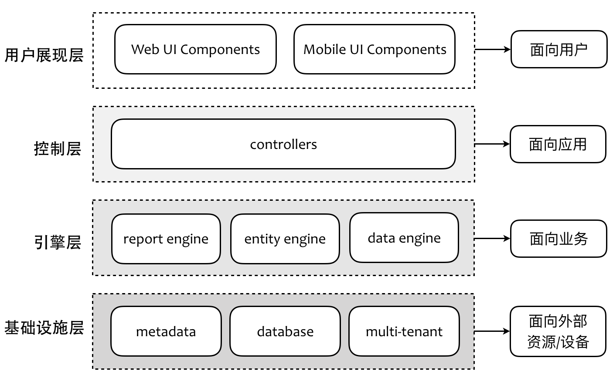

- 001 「战略篇」访谈 DDD 和微服务是什么关系？.md.html
- 002 「战略篇」开篇词：领域驱动设计，重焕青春的设计经典.md.html
- 003 领域驱动设计概览.md.html
- 004 深入分析软件的复杂度.md.html
- 005 控制软件复杂度的原则.md.html
- 006 领域驱动设计对软件复杂度的应对（上）.md.html
- 007 领域驱动设计对软件复杂度的应对（下）.md.html
- 008 软件开发团队的沟通与协作.md.html
- 009 运用领域场景分析提炼领域知识（上）.md.html
- 010 运用领域场景分析提炼领域知识（下）.md.html
- 011 建立统一语言.md.html
- 012 理解限界上下文.md.html
- 013 限界上下文的控制力（上）.md.html
- 014 限界上下文的控制力（下）.md.html
- 015 识别限界上下文（上）.md.html
- 016 识别限界上下文（下）.md.html
- 017 理解上下文映射.md.html
- 018 上下文映射的团队协作模式.md.html
- 019 上下文映射的通信集成模式.md.html
- 020 辨别限界上下文的协作关系（上）.md.html
- 021 辨别限界上下文的协作关系（下）.md.html
- 022 认识分层架构.md.html
- 023 分层架构的演化.md.html
- 024 领域驱动架构的演进.md.html
- 025 案例 层次的职责与协作关系（图文篇）.md.html
- 026 限界上下文与架构.md.html
- 027 限界上下文对架构的影响.md.html
- 028 领域驱动设计的代码模型.md.html
- 029 代码模型的架构决策.md.html
- 030 实践 先启阶段的需求分析.md.html
- 031 实践 先启阶段的领域场景分析（上）.md.html
- 032 实践 先启阶段的领域场景分析（下）.md.html
- 033 实践 识别限界上下文.md.html
- 034 实践 确定限界上下文的协作关系.md.html
- 035 实践 EAS 的整体架构.md.html
- 036 「战术篇」访谈：DDD 能帮开发团队提高设计水平吗？.md.html
- 037 「战术篇」开篇词：领域驱动设计的不确定性.md.html
- 038 什么是模型.md.html
- 039 数据分析模型.md.html
- 040 数据设计模型.md.html
- 041 数据模型与对象模型.md.html
- 042 数据实现模型.md.html
- 043 案例 培训管理系统.md.html
- 044 服务资源模型.md.html
- 045 服务行为模型.md.html
- 046 服务设计模型.md.html
- 047 领域模型驱动设计.md.html
- 048 领域实现模型.md.html
- 049 理解领域模型.md.html
- 050 领域模型与结构范式.md.html
- 051 领域模型与对象范式（上）.md.html
- 052 领域模型与对象范式（中）.md.html
- 053 领域模型与对象范式（下）.md.html
- 054 领域模型与函数范式.md.html
- 055 领域驱动分层架构与对象模型.md.html
- 056 统一语言与领域分析模型.md.html
- 057 精炼领域分析模型.md.html
- 058 彩色 UML 与彩色建模.md.html
- 059 四色建模法.md.html
- 060 案例 订单核心流程的四色建模.md.html
- 061 事件风暴与业务全景探索.md.html
- 062 事件风暴与领域分析建模.md.html
- 063 案例 订单核心流程的事件风暴.md.html
- 064 表达领域设计模型.md.html
- 065 实体.md.html
- 066 值对象.md.html
- 067 对象图与聚合.md.html
- 068 聚合设计原则.md.html
- 069 聚合之间的关系.md.html
- 070 聚合的设计过程.md.html
- 071 案例 培训领域模型的聚合设计.md.html
- 072 领域模型对象的生命周期-工厂.md.html
- 073 领域模型对象的生命周期-资源库.md.html
- 074 领域服务.md.html
- 075 案例 领域设计模型的价值.md.html
- 076 应用服务.md.html
- 077 场景的设计驱动力.md.html
- 078 案例 薪资管理系统的场景驱动设计.md.html
- 079 场景驱动设计与 DCI 模式.md.html
- 080 领域事件.md.html
- 081 发布者—订阅者模式.md.html
- 082 事件溯源模式.md.html
- 083 测试优先的领域实现建模.md.html
- 084 深入理解简单设计.md.html
- 085 案例 薪资管理系统的测试驱动开发（上）.md.html
- 086 案例 薪资管理系统的测试驱动开发（下）.md.html
- 087 对象关系映射（上）.md.html
- 088 对象关系映射（下）.md.html
- 089 领域模型与数据模型.md.html
- 090 领域驱动设计对持久化的影响.md.html
- 091 领域驱动设计体系.md.html
- 092 子领域与限界上下文.md.html
- 093 限界上下文的边界与协作.md.html
- 094 限界上下文之间的分布式通信.md.html
- 095 命令查询职责分离.md.html
- 096 分布式柔性事务.md.html
- 097 设计概念的统一语言.md.html
- 098 模型对象.md.html
- 099 领域驱动设计参考过程模型.md.html
- 100 领域驱动设计的精髓.md.html
- 101 实践 员工上下文的领域建模.md.html
- 102 实践 考勤上下文的领域建模.md.html
- 103 实践 项目上下文的领域建模.md.html
- 104 实践 培训上下文的业务需求.md.html
- 105 实践 培训上下文的领域分析建模.md.html
- 106 实践 培训上下文的领域设计建模.md.html
- 107 实践 培训上下文的领域实现建模.md.html
- 108 实践 EAS 系统的代码模型.md.html
- 109 后记：如何学习领域驱动设计.md.html
022 认识分层架构
分层架构是运用最为广泛的架构模式，几乎每个软件系统都需要通过层（Layer）来隔离不同的关注点（Concern Point），以此应对不同需求的变化，使得这种变化可以独立进行；此外，分层架构模式还是隔离业务复杂度与技术复杂度的利器，《领域驱动设计模式、原理与实践》这样写道：
为了避免将代码库变成大泥球（BBoM）并因此减弱领域模型的完整性且最终减弱可用性，系统架构要支持技术复杂性与领域复杂性的分离。引起技术实现发生变化的原因与引起领域逻辑发生变化的原因显然不同，这就导致基础设施和领域逻辑问题会以不同速率发生变化。
这里所谓的“以不同速率发生变化”，其实就是引起变化的原因各有不同，这正好是单一职责原则（Single-Responsibility Principle，SRP）的体现。Robert Martin 认为单一职责原则就是“一个类应该只有一个引起它变化的原因”，换言之，如果有两个引起类变化的原因，就需要分离。单一职责原则可以理解为架构原则，这时要考虑的就不是类，而是层次，我们为什么要将业务与基础设施分开？正是因为引起它们变化的原因不同。
经典分层架构
分层架构由来已久，把一个软件系统进行分层，似乎已经成为了每个开发人员的固有意识，甚至不必思考即可自然得出，这其中最为经典的就是三层架构以及领域驱动设计提出的四层架构。
经典三层架构
在软件架构中，经典三层架构自顶向下由用户界面层（User Interface Layer）、业务逻辑层（Business Logic Layer）与数据访问层（Data Access Layer）组成，该分层架构之所以能够流行，是有其历史原因的。在提出该分层架构的时代，多数企业系统往往较为简单，本质上都是一个单体架构（Monolithic Architecture）的数据库管理系统。这种分层架构已经是 Client-Server 架构的进化了，它有效地隔离了业务逻辑与数据访问逻辑，使得这两个不同关注点能够相对自由和独立地演化。一个经典的三层架构如下所示：
领域驱动设计的经典分层架构
领域驱动设计在经典三层架构的基础上做了进一步改良，在用户界面层与业务逻辑层之间引入了新的一层，即应用层（Application Layer）。同时，一些层次的命名也发生了变化，将业务逻辑层更名为领域层自然是题中应有之义，而将数据访问层更名为基础设施层（Infrastructure Layer），则突破了之前数据库管理系统的限制，扩大了这个负责封装技术复杂度的基础层次的内涵。下图为 Eric Evans 在其经典著作《领域驱动设计》中的分层架构：
该书对各层的职责作了简单的描述：
| 层次 | 职责 |
|---|---|
| 用户界面/展现层 | 负责向用户展现信息以及解释用户命令 |
| 应用层 | 很薄的一层，用来协调应用的活动，它不包含业务逻辑，它不保留业务对象的状态，但它保有应用任务的进度状态 |
| 领域层 | 本层包含关于领域的信息，这是业务软件的核心所在。在这里保留业务对象的状态，对业务对象和它们状态的持久化被委托给了基础设施层 |
| 基础设施层 | 本层作为其他层的支撑库存在。它提供了层间的通信，实现对业务对象的持久化，包含对用户界面层的支撑库等作用 |
追溯分层架构的本源
当分层架构变得越来越普及时，我们的设计反而变得越来越僵化，一部分软件设计师并未理解分层架构的本质，只知道依样画葫芦地将分层应用到系统中，要么采用经典的三层架构，要么遵循领域驱动设计改进的四层架构，却未思考和探究如此分层究竟有何道理？这是分层架构被滥用的根源。
视分层（Layer）为一个固有的架构模式，其根源应为 Frank Buschmann 等人著的《面向模式的软件架构》第一卷《模式系统》，该模式参考了 ISO 对 TCP/IP 协议的分层。《模式系统》对分层的描述为：
分层架构模式有助于构建这样的应用：它能被分解成子任务组，其中每个子任务组处于一个特定的抽象层次上。
显然，这里所谓的“分层”首先是一个逻辑的分层，对子任务组的分解需要考虑抽象层次，一种水平的抽象层次。既然为水平的分层，必然存在层的高与低；而抽象层次的不同，又决定了分层的数量。因此，对于分层架构，我们需要解决如下问题：
- 分层的依据与原则是什么？
- 层与层之间是怎样协作的？
分层的依据与原则
我们之所以要以水平方式对整个系统进行分层，是我们下意识地确定了一个认知规则：机器为本，用户至上，机器是运行系统的基础，而我们打造的系统却是为用户提供服务的。分层架构中的层次越往上，其抽象层次就越面向业务、面向用户；分层架构中的层次越往下，其抽象层次就变得越通用、面向设备。为什么经典分层架构为三层架构？正是源于这样的认知规则：其上，面向用户的体验与交互；居中，面向应用与业务逻辑；其下，面对各种外部资源与设备。在进行分层架构设计时，我们完全可以基于这个经典的三层架构，沿着水平方向进一步切分属于不同抽象层次的关注点。因此，分层的第一个依据是基于关注点为不同的调用目的划分层次。以领域驱动设计的四层架构为例，之所以引入应用层（Application Layer），就是为了给调用者提供完整的业务用例。
分层的第二个依据是面对变化。分层时应针对不同的变化原因确定层次的边界，严禁层次之间互相干扰，或者至少把变化对各层带来的影响降到最低。例如，数据库结构的修改自然会影响到基础设施层的数据模型以及领域层的领域模型，但当我们仅需要修改基础设施层中数据库访问的实现逻辑时，就不应该影响到领域层了。层与层之间的关系应该是正交的，所谓“正交”，并非二者之间没有关系，而是垂直相交的两条直线，唯一相关的依赖点是这两条直线的相交点，即两层之间的协作点，正交的两条直线，无论哪条直线进行延伸，都不会对另一条直线产生任何影响（指直线的投影）；如果非正交，即“斜交”，当一条直线延伸时，它总是会投影到另一条直线，这就意味着另一条直线会受到它变化的影响。
在进行分层时，我们还应该保证同一层的组件处于同一个抽象层次。这是分层架构的设计原则，它借鉴了 Kent Beck 在 Smalltalk Best Practice Patterns 一书提出的“组合方法”模式，该模式要求一个方法中的所有操作处于相同的抽象层，这就是所谓的“单一抽象层次原则（SLAP）”，这一原则可以运用到分层架构中。例如，在一个基于元数据的多租户报表系统中，我们特别定义了一个引擎层（Engine Layer），这是一个隐喻，相当于为报表系统提供报表、实体与数据的驱动引擎。引擎层之下，是基础设施层，提供了多租户、数据库访问与元数据解析与管理等功能。在引擎层之上是一个控制层，通过该控制层的组件可以将引擎层的各个组件组合起来，分层架构的顶端是面向用户的用户展现层，如下图所示：

层与层之间的协作
在我们固有的认识中，分层架构的依赖都是自顶向下传递的，这也符合大多数人对分层的认知模型。从抽象层次来看，层次越处于下端，就会变得越通用越公共，与具体的业务隔离得越远。出于重用的考虑，这些通用和公共的功能往往会被单独剥离出来形成平台或框架，在系统边界内的低层，除了面向高层提供足够的实现外，就都成了平台或框架的调用者。换言之，越是通用的层，越有可能与外部平台或框架形成强依赖。若依赖的传递方向仍然采用自顶向下，就会导致系统的业务对象也随之依赖于外部平台或框架。
依赖倒置原则（Dependency Inversion Principle，DIP）提出了对这种自顶向下依赖的挑战，它要求“高层模块不应该依赖于低层模块，二者都应该依赖于抽象”，这个原则正本清源，给了我们严重警告——谁规定在分层架构中，依赖就一定要沿着自顶向下的方向传递？我们常常理解依赖，是因为被依赖方需要为依赖方（调用方）提供功能支撑，这是从功能重用的角度来考虑的。但我们不能忽略变化对系统产生的影响！与建造房屋一样，我们自然希望分层的模块“构建”在稳定的模块之上，谁更稳定？抽象更稳定。因此，依赖倒置原则隐含的本质是：我们要依赖不变或稳定的元素（类、模块或层），也就是该原则的第二句话：抽象不应该依赖于细节，细节应该依赖于抽象。
这一原则实际是“面向接口设计”原则的体现，即“针对接口编程，而不是针对实现编程”。高层模块对低层模块的实现是一无所知的，带来的好处是：
- 低层模块的细节实现可以独立变化，避免变化对高层模块产生污染
- 在编译时，高层模块可以独立于低层模块单独存在
- 对于高层模块而言，低层模块的实现是可替换的
倘若高层依赖于低层的抽象，必然会面对一个问题：如何把具体的实现传递给高层的类？由于在高层通过接口隔离了对具体实现的依赖，就意味着这个具体依赖被转移到了外部，究竟使用哪一种具体实现，由外部的调用者来决定。只有在运行调用者代码时，才将外面的依赖传递给高层的类。Martin Fowler 形象地将这种机制称为“依赖注入（Dependency injection）”。
为了更好地解除高层对低层的依赖，我们往往需要将依赖倒置原则与依赖注入结合起来。
层之间的协作并不一定是自顶向下的传递通信，也有可能是自底向上通信。例如，在 CIMS（计算机集成制造系统）中，往往会由低层的设备监测系统监测（侦听）设备状态的变化。当状态发生变化时，需要将变化的状态通知到上层的业务系统。如果说自顶向下的消息传递往往被描述为“请求（或调用）”，则自底向上的消息传递则往往被形象地称之为“通知”。倘若我们颠倒一下方向，自然也可以视为这是上层对下层的观察，故而可以运用观察者模式（Observer Pattern），在上层定义 Observer 接口，并提供 update() 方法供下层在感知状态发生变更时调用；或者，我们也可以认为这是一种回调机制。虽然本质上这并非回调，但设计原理是一样的。
如果采用了观察者模式，则与前面讲述的依赖倒置原则有差相仿佛之意，因为下层为了通知上层，需要调用上层提供的 Observer 接口。如此看来，无论是上层对下层的“请求（或调用）”，抑或下层对上层的“通知”，都颠覆了我们固有思维中那种高层依赖低层的理解。
现在，我们对分层架构有了更清醒的认识。我们必须要打破那种谈分层架构必为经典三层架构又或领域驱动设计推荐的四层架构这种固有思维，而是将分层视为关注点分离的水平抽象层次的体现。既然如此，架构的抽象层数就不是固定的，甚至每一层的名称也未必遵循固有（经典）的分层架构要求。设计系统的层需得结合该系统的具体业务场景而定。当然，我们也要认识到层次多少的利弊：过多的层会引入太多的间接而增加不必要的开支，层太少又可能导致关注点不够分离，导致系统的结构不合理。
我们还需要正视架构中各层之间的协作关系，打破高层依赖低层的固有思维，从解除耦合（或降低耦合）的角度探索层之间可能的协作关系。另外，我们还需要确定分层的架构原则（或约束），例如是否允许跨层调用，即每一层都可以使用比它低的所有层的服务，而不仅仅是相邻低层。这就是所谓的“松散分层系统（Relaxed Layered System）”。